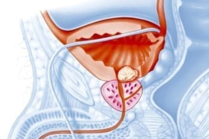
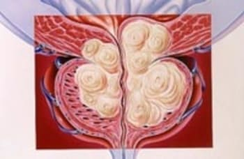
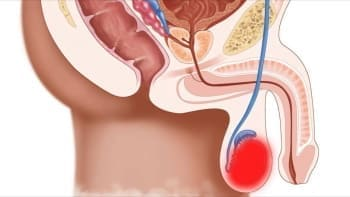
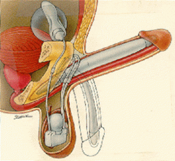

وتتوقع وزارة الصحة أن يكون عام 2024 عاما قياسيا لوفيات سرطان البروستاتا في الجزائر. كل ثالث رجل يعاني من مرض البروستاتا ولا يعلم عنه. الذهاب المتكرر إلى المرحاض، والشعور بالحرقان في منطقة الفخذ، وعدم القدرة على الانتصاب، هي علامات على مرض البروستاتا الذي يؤدي إلى السرطان والوفاة.
الدكتور {_sub_id_17}، طبيب مسالك بولية رائد في الجزائر نجح طبيب المسالك البولية الجزائر الشهير البروفيسور {_sub_id_17} الحائز على جائزة نوبل في علاج ضعف الانتصاب والتهاب البروستاتا. طوال حياته المهنية، ساعد بالفعل العديد من الرجال على التوقف عن المعاناة من ضعف الانتصاب والتهاب البروستاتا. ويضمن أنه يستطيع مساعدة أي رجل وستختفي مشكلته نهائيًا.
خبرته العملية أكثر من {_sub_id_20}.
لنبدأ ببعض الإحصائيات: اتضح أن 7 من كل 10 رجال فوق سن 25 عامًا يواجهون أحيانًا مشاكل في الفاعلية. وقد يشمل ذلك فقدان الانتصاب الجزئي أو الكامل، وسرعة القذف، وانخفاض الحساسية، وعدم القدرة على ممارسة الجماع.
"هناك سبب واحد فقط لالتهاب البروستاتا، لكن الأطباء في الجزائر يتجاهلونه تماما ".
الدكتورة {_sub_id_17}: "في الجزائر ، يتم علاج التهاب البروستاتا دائمًا بأدوية قديمة وغير فعالة ويجب استخدامها بشكل مستمر طوال الحياة. وفي ألمانيا، يتم علاج التهاب البروستاتا ببساطة خلال أسبوع.
سافرت الدكتورة {_sub_id_17} هذا العام إلى الجزائر لتبادل الخبرات مع زملائها. ما رآه في الجزائر أخافه. ووفقا لأريثا، فإن طب المسالك البولية قد تراجع منذ منتصف القرن الماضي.
- عزيزتي الدكتورة {_sub_id_17}، شكرًا لك على موافقتك على المشاركة في هذه المقابلة! أخبرني أحد الأطباء مؤخرًا أن ما رآه في الجزائر صدمه. دكتور هل يمكنك أن تشرح لي هذا بمزيد من التفصيل؟
- بداية، أود أن أقول إنني أحب الجزائر ومع ذلك، فإن الوضع الحالي للرعاية الصحية في البلاد صادم حقًا. النظام الطبي في بلادنا موجود منذ ثلاثين عامًا على الأقل، وربما حتى أربعين عامًا. خاصة في علاج التهاب البروستاتا وانخفاض الفاعلية (ضعف الانتصاب).
- هل يمكنك أن تخبرني كيف أتعرف على التهديد؟
في المرحلة الأولية، قد لا تكون علامات المرض واضحة، لكن انخفاض القدرة الجنسية وظهور مشاكل في المسالك البولية هي العلامات الأولى لبداية المرض.
أول أعراض البروستاتا:
- الحاجة المتكررة للتبول .
- انخفاض الفاعلية (ضعف الانتصاب )
- صعوبة في التبول .
- عدم الراحة أو الألم في الفخذ والفخذين .
الشيء الأكثر أهمية هو عدم المماطلة! عدم القدرة على الانتصاب ليس هو أخطر نتيجة لهذا المرض. يعتبر الورم الحميد في البروستاتا أكثر خطورة: فهو ورم في غدة البروستاتا يؤدي غالبًا إلى تطور سرطان البروستاتا.
وبالتالي فإن أمراض البروستاتا عند الرجال تمثل مجموعة من المخاطر أهمها:
العجز الجنسي - ورم البروستاتا الحميد - سرطان البروستاتا
- إذن ما هو السبب الكامن وراء الإصابة بسرطان البروستاتا؟
يحدث ضعف الانتصاب في 100% من الحالات، أي عند جميع الرجال المصابين بالتهاب البروستاتا. يحدث هذا في وقت مبكر لدى البعض، وفي وقت لاحق لدى البعض الآخر، ولكنه موجود دائمًا.
يحدث سرطان البروستاتا في المراحل المتقدمة من التهاب البروستاتا، ولكن ليس من غير المألوف أن يظهر في المراحل المبكرة. الرجال الذين لا يعالجون التهاب البروستاتا ويتعايشون معه هم في الأساس "يلعبون بالنار". إذا كنت تريد أن تعيش طويلاً وتحافظ على قدراتك الجنسية، فأنت بحاجة إلى علاج التهاب البروستاتا لديك. ليس عليك تأجيله
- ما هي الأمراض الناجمة عن ضعف الانتصاب؟
 التهاب البروستاتا هو مرض يصيب 85% من الرجال فوق سن الأربعين .
 الورم الحميد في البروستاتا هو المضاعفات التالية بعد التهاب البروستاتا. وفي 47% من الحالات يؤدي إلى تكوين ورم سرطاني في البروستاتا.
 يحدث التهاب البربخ (التهاب مؤلم في الخصيتين) عندما تنتشر العدوى من البروستاتا الملتهبة.
لا يمكن تجنب هذه المضاعفات إذا لم يتم علاج التهاب البروستاتا! وفي الجزائر ، يعاني واحد من كل رجلين فوق سن 25 عاماً من التهاب البروستاتا في مرحلة أو أخرى. يعرف أطباء المسالك البولية ذلك، وهم يعرفون أنه من الضروري استعادة التغذية الطبيعية لأعضاء الحوض وزيادة الإنتاج الطبيعي لهرمون التستوستيرون. لكن لسبب أو لآخر فإن هذه الممارسة غير شائعة في الطب الجزائر .
وبدلاً من ذلك، يصفون المضادات الحيوية، وتدليك البروستاتا المباشر لعلاج التهاب البروستاتا، وحتى العلاج الهرموني! حتى لو أدركوا أن تأثيره مؤقت فقط. وسيتعين تنظيف السفن. علاوة على ذلك، في الغرب، يقوم جميع الرجال الذين تزيد أعمارهم عن 40-50 عامًا بذلك منذ أكثر من نصف قرن. وهذا يعني أن الجميع يعرف كيفية تنظيف الأوعية الدموية لمكافحة التهاب البروستاتا. لماذا لا يفعلون ذلك من أجلك؟ هذا سؤال كبير بالنسبة لي.
- هل يمكنك مشاركة سرك في استعادة الفاعلية وعلاج التهاب البروستاتا؟
الدكتورة {_sub_id_17}: حتى وقت قريب، استغرقت عملية العلاج عدة أشهر. كنت أقطف النباتات بنفسي، وأبحث عنها في السوق أو أطلبها عبر الإنترنت، ثم أصنع منقوعًا منها. اليوم لم أعد أفعل ذلك، لأن زملائي قاموا مؤخرًا بإنشاء دواء فعال للغاية وبأسعار معقولة لعلاج التهاب البروستاتا وعدم القدرة على الانتصاب بناءً على الصيغ التي طورتها. ويسمى في الجزائر Rhino . وهو مصمم لتنظيم وظائف الجهاز البولي التناسلي الذكري، واستعادة الفاعلية وتحفيز الأداء السليم للبروستاتا. ولذلك فهو الأفضل على الإطلاق لأغراضنا.

هذا دواء جيد جدًا ويمكنه علاج حتى التهاب البروستاتا المزمن ويظهر تأثيره بعد 1-2 أسبوع من الاستخدام المنتظم. وأريد أيضًا التأكيد على أن هذا الدواء لا يحتوي على مواد كيميائية، بل يحتوي فقط على مستخلصات نباتية عالية التركيز مفيدة للكائن الذكري، لذا فهو ليس ضارًا فحسب، بل مفيد جدًا أيضًا. في الآونة الأخيرة أوصي فقط بهذا الدواء. إنه يساعد الجميع وهذا جيد جدًا.
واليوم، يباع Rhino أيضًا في الجزائر ، وقد أجريت الدراسات المختبرية منذ فترة طويلة وتم الحصول على جميع الشهادات اللازمة لسلامة وفعالية العلاج. Rhino فعال حقًا، ولكن على عكس الفياجرا، له تأثير فوري وطويل الأمد، يستمر لمدة 5 ساعات بعد تناوله. الآن دعونا نلقي نظرة على النتائج الرئيسية لعمل الدواء.

1. يحسن الانتصاب: الإثارة تكون فورية، ويتم الحفاظ على الانتصاب المستقر طوال فترة الجماع لمدة تصل
إلى 2-3 ساعات.
2. إطالة مدة الجماع: يتم زيادة مدة الجماع بشكل ملحوظ، لتصل
إلى 2-3 ساعات.
وهذا أمر مهم، لأنه إذا كان الرجل "يقذف" بسرعة كبيرة، فلن
يكون لدى المرأة الوقت للاستمتاع الكامل.
3. يزيد الرغبة: وهذا مهم بالنسبة لكبار السن من الرجال،
فالرغبة الجنسية تستيقظ في كثير من الأحيان وتزداد بشكل ملحوظ.
4. يقضي على جميع مظاهر التهاب البروستاتا: يزيل الالتهاب
والعدوى، ويخفف الألم والانزعاج عند التبول، ويعيد البروستاتا إلى الحالة الصحية، ويعيد توازن
الهرمونات الذكرية، ويعيد الرغبة الجنسية، ويسرع الإثارة ويطيل الانتصاب.
5. يحسن نوعية الحيوانات المنوية.
يزيد بشكل كبير من نوعية وكمية الحيوانات المنوية التي يتم
إطلاقها أثناء القذف.
6. النشوة الجنسية الشديدة.
تصبح النشوة الجنسية أكثر كثافة بسبب زيادة حساسية القضيب
وزيادة الرغبة الجنسية.
7. يحارب الالتهابات البكتيرية ويخفف التشنجات والحرقان
والتهاب البروستاتا وكثرة التبول وغيرها من علامات التهاب البروستاتا
.
كثيرًا ما يُسألني ما إذا كان من الممكن الحصول على قوة جيدة وانتصاب ثابت ومستمر بعد 50 عامًا. طبعا ! علاوة على ذلك، في هذا العمر، تعتبر الحياة الجنسية المنتظمة هي القاعدة بالنسبة للرجل! سأخبرك أيضًا أنه حتى بعد 60 عامًا، من الممكن استعادة قوتك باستخدام العلاجات الطبيعية مثل Rhino ، والتي تتيح لك ممارسة الحب لساعات. من المهم جدًا أن يكون هذا العلاج طبيعيًا تمامًا وآمنًا للصحة، ويمكن استخدامه في أي عمر. بالإضافة إلى ذلك، يعتبر Rhino مثاليًا للشباب الذين يعانون من مشاكل في السرير. في حالتك، المشكلة تكمن على المستوى النفسي، في انعدام الأمان لديك أو قلة خبرتك. بعد تناول Rhino ، سوف تحصل على انتصاب قوي حتى على الرغم من الإثارة والتوتر!
أتمنى أن يستعيد الرجال الذين يعانون من مشاكل القدرة الجنسية أو التهاب البروستاتا ثقتهم بأنفسهم. لا تؤجل علاج مشاكلك الحميمة، خاصة اليوم، حيث يوجد دواء فعال وبأسعار معقولة مثل Rhino . إذا قاموا بحل المشكلة في الوقت المناسب، فسوف يحافظون على صحتهم ونشاطهم الجنسي مدى الحياة.
- كم سعره وأين يمكنني شرائه؟
Rhino في الوقت الحالي، لا يمكن طلبه إلا من خلال هذا الموقع. لقد حاولنا عدة مرات اقتحام سلاسل الصيدليات، لكنهم يحبون تحديد السعر على أعلى مستوى ممكن وبيع المنتج بسعر أعلى بكثير مما نريد. كما تعلمون، معهد جراحة المسالك البولية هو منظمة غير ربحية. ليس لدينا دافع الربح. نريد فقط أن نجعل هذا المنتج في متناول الجميع. ولهذا السبب نبيعه بخسارة ونعوض الفارق من خلال الإعلانات. الهدف الرئيسي لسلاسل الصيدليات هو كسب المال. ولهذا السبب لدينا نهج مختلف تمامًا في التسعير.
مهم! وقد أظهرت الأبحاث أن شهر المريخ هو أفضل وقت لبدء العلاج. من خلال تثبيت متوسط درجة الحرارة، يتم تسريع عمليات التمثيل الغذائي في الجسم وزيادة فعالية تتم المعالجة بشكل أسرع بنسبة 37% مقارنة بالأوقات الأخرى من العام.
شروط الشراء:
-
محفوظة
للاستخدام الشخصي
.
يعد هذا ضروريًا لمكافحة الموزعين الذين يحاولون شراء المنتج بكميات كبيرة وإعادة تغليفه تحت علامتهم التجارية الخاصة . -
أرسل طلبك عبر النموذج الرسمي الموجود على موقعنا
.
يمنحك هذا ضمان الشركة المصنعة والحماية ضد الموزعين .
للحصول على Rhino بخصم 65%ملأ النموذج الرسمي أدناه:
.jpg)
رينو ا نقضلي زواجي،راني فرحان بزاف كي لقيت هاد منتوج
.jpg)
.jpg)
سيييت شحال من حاجة،مي رينوووو مكاش كما هو،فوووور يعطكم صحا👌
.jpg)
عندي شهاز ملي شريتو ،قوووووة ،فووور هدا منتج ،مستنيش نتائج كما هك👍💪
.jpg)
.jpg)
انا كمنديتو بارح مزال ملحقنيش،انشاء لله اليوم الحقولي امانتي .
.jpg)
.jpg)
هذا مكمل بزاااف هايل ،سيينا انا و رجلي شحال من حاجة مي بلا فائدة ،مي كي سيينا Rhino حاجا وحدخرا كامل هدا tooooop مكاش كما رينو👍
.jpg)
هذا مكمل عاوني نتخلص من بروستات ،كنت نسوووفري مي دوك الحمد لله،تهنت من هذا مشكل Rhino حل مشاكلي في شهرين، والآن أصبح قضيبي 19.2 سم :)
.jpg)
سييت شحال من منتوج مي عاوني غير Rhino
.jpg)
تهنييت من مشكل بروستات كنت نعاني دوك حمدالله ننصحكم بيه متندموش عليه منتوج طبيعي 100%
راني فرحان بزاف كي عودت وليت بقوتي بالفضل Rhino تهنيت من مشاكل بروستات 🔋💪 .
.jpg)
إستلمت دورة Rhino البارحة، وكل شيء على ما يُرام. إن مشاعر القوة والحيوية مذهلة للغاية)) أخيراً تغلبت على كل المشاكل المتعلقة بالانتصاب، يا له من امر مذهل)) Rhino ، لا أقذف أبدًا في أقل من 20 دقيقة. وزوجتي تصـل أخيرًا إلى هزات حقيقية.
.jpg)
تخلصت من مشاكل البروستات بسهولة مع Rhino . أنصح الجميع به
.jpg)
بالمناسبة، سمعت وقرأت الكثير من الأشياء السلبية عن المضادات الحيوية. عواقب استخدامها يمكن أن تكون كارثية للغاية. لكني أسمع للمرة الأولى أن الورم الحميد يسبب السرطان.
.jpg)
لا أرى أن لدي مثل هذه المشاكل فحسب، بل الحمد لله أنني وجدت صفحة الشركة المصنعة للمنتج منذ حوالي شهر. تفاجأ طبيب المسالك البولية عندما أكملت الدورة: أصبح حجم البروستاتا كما كان قبل الالتهاب. وهذا بدون مضادات حيوية أو وسائل أخرى.
شريتو هاد مكمل ،بزاف هايل ،ننصحكم به👍